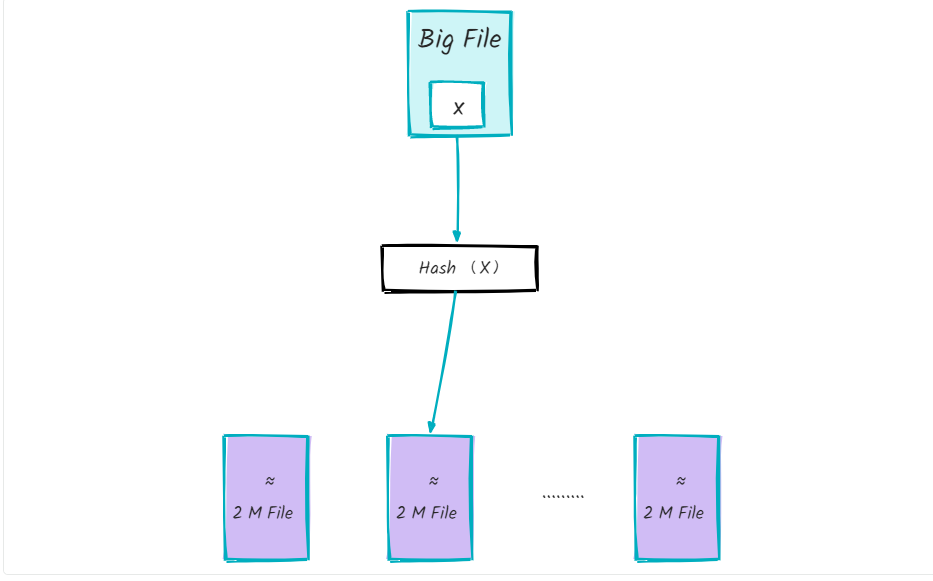

算法与数据结构 02 - 海量数据TopK问题
海量数据场景经典面试题：1G 文件、内存仅 10M，求出现频率最高的 100 个词。两种主流解法——分治（hash 取余 + HashMap 统计 + 小顶堆）与多路归并排序，核心思想都是「分而治之 + 堆」。
题目描述
- 1G 大小的文件，每行一个词，每个词不超过 16 bytes
- 内存限制 10M，要求返回出现频率最高的 100 个词
解法 1：分治

思路：大文件无法一次性读入内存 → 拆分成小文件分别统计 → 小顶堆汇总 Top100。
- hash 取余分文件：遍历大文件，对每个词 x 执行
hash(x) % 500，将结果为 i 的词写入文件 f(i)。遍历结束后得到 500 个小文件，每个约 2M。 - 单文件内统计：用 HashMap 统计每个小文件中各词出现频率，取各文件频率最高的 100 个词。
BufferedReader br = new BufferedReader(new FileReader(fin));
String line = null;
while ((line = br.readLine()) != null) {
if (map.containsKey(line)) {
map.put(line, map.get(line) + 1);
} else {
map.put(line, 1);
}
}
br.close();- 小顶堆汇总：遍历第一个文件，用其 Top100 词构建小顶堆（不足 100 个则继续读下一个文件补齐）；继续遍历其余小文件，若某词出现次数大于堆顶词，替换堆顶并重新调整堆。遍历完所有小文件后，堆中即为全局频率最高的 100 个词。
总结：分治（hash 取余）→ HashMap 统计单文件词频 → 小顶堆求全局 Top100。
局限：若大文件中某个词频率过高（甚至整个文件是同一个词），hash 后仍可能导致某小文件超过 10M，解法 1 不适用。
解法 2：多路归并排序
思路：先对大文件排序（相同词必然相邻），再顺序扫描计数 + 小顶堆取 Top100。
- 多路归并对大文件排序：
- 文件按顺序切分为不超过 2M 的小文件（共 500 个）
- 用 10M 内存分别对 500 个小文件内部排序
- 用大小为 500 的堆对 500 个有序小文件做多路归并，结果写回一个大文件
- 多路归并细节：初始化大小为 500 的最小堆，堆节点存放每个有序小文件的输入流；按各文件下一行数据排序，单词小的输入流在堆顶；取出堆顶流写入最终排序文件，若该流还有数据则重新入堆，否则关闭流；循环至所有流耗尽。
- 顺序扫描 + 小顶堆：初始化 100 节点小顶堆；顺序读排序后的大文件并计数；当遍历到的词与上一个词不同时，若上一个词的频率大于堆顶频率则入堆（替换堆顶），否则跳过。最终堆中即为 Top100 单词。
延伸：赛马问题（TopN 分治与并行思维）
经典高频智力题：64 匹马赛跑，没有秒表等计时工具，跑道每次只允许 8 匹马同场，求最少几场选出最快的前 4 名。 本题与上面的 TopK 同源，都是「TopN + 分治」，关键在于每一轮都用已有结果淘汰掉不可能进入前 4 的马。
第一轮（8 场）：64 匹分成 8 组各比一场。每组第 4 名之后全部淘汰（组内已知有 3 匹更快），剩 32 匹。
第二轮（1 场）：让 8 个组的冠军同场比一场，按结果给组排序。理由：某组冠军都进不了前 4，该组其余马必然也进不了，可整组淘汰（剩 16 匹）；再进一步，排名第 4 的组其冠军理论最好成绩才是第 4，该组其余马也一并淘汰——最终只剩 10 匹，其中「组内组外全胜」的那匹已锁定总冠军。
第三轮（1 场）：总冠军不用再比，目标变为从剩余 9 匹中选第 2-4 名。任取 8 匹比一场选出前 3，再让落单那匹与前 3 比一场（防黑马）→ 合计 8 + 1 + 1 + 1 = 11 场。
但 11 场仍是错误答案。更优解：还剩 9 匹时先移出组 2 的冠军，让其余 8 匹比一场——若这场的第 1 名恰好是组 3 的冠军，则因「组 2 冠军 > 组 3 冠军」已经成立，前 4 名可直接确定，只需 10 场；只有当它不是第一时，才需要补比第 11 场。因此正确答案是最少 10 场。
思维提炼：
- 本质是 TopN（取前几名）问题，靠分治把大集合拆成内部可比的小组，再逐步收敛；
- 充分利用已有结果做剪枝（每轮的排名信息都能排除一批候选）是压缩比较次数的关键；
- 映射到分布式系统即 并行计算：跑道数相当于可并行资源数，分组同时计算能显著提升整体效率。
小结
- 解法 1（分治）：思路直观，但存在词频过高导致小文件超限的缺陷
- 解法 2（多路归并）：更严谨，词频过高或文件全是同一单词时依然适用
来源：鱼皮·编程导航 / codefather